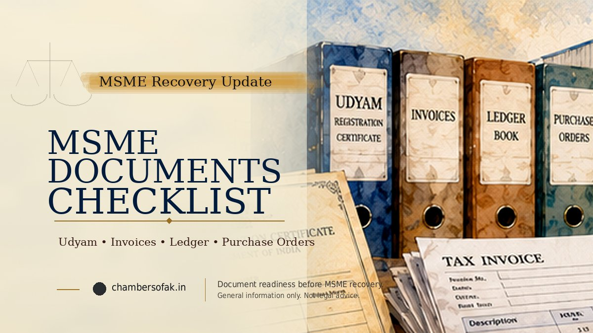

MSME Samadhaan is best treated as the filing and routing layer of the delayed-payment process, not as the entire case. Before submission, the supplier should verify eligibility and jurisdiction, build an invoice-wise claim, prepare the work-order and supporting PDFs, and check limitation. After submission, the supplier should preserve the acknowledgement, identify the concerned MSEFC, comply with any physical-copy or fee direction and monitor whether the application is converted into a regular reference/claim case.

Samadhaan filing checklist in one minute
- Confirm the claimant is the correct micro or small enterprise with valid Udyam Registration.
- Confirm the supplier-side MSEFC jurisdiction before filing.
- Prepare an invoice-wise principal, due-date, payment, interest and limitation schedule.
- Keep the purchase/work order ready; for an oral purchase order, prepare the affidavit required by the Ministry FAQ.
- Combine multiple invoices into a clear, indexed PDF where needed, but keep the invoice schedule separately.
- Enter buyer identity and contact details exactly from reliable records.
- Save the final application, upload set and submission acknowledgement.
- Use the acknowledgement to identify the concerned MSEFC and current follow-up contact.
- Track whether the Council converts the application into a regular reference/claim case.
- Comply with any State-specific physical filing, service, affidavit, court-fee or processing-fee direction.
What Samadhaan does—and what it does not do
The Ministry of MSME describes Samadhaan as the online facility through which micro and small enterprises can file delayed-payment applications. The application is then forwarded to the concerned State/UT Micro and Small Enterprises Facilitation Council.
The Ministry's FAQ is explicit that the Ministry itself does not adjudicate the delayed-payment dispute. The concerned MSEFC is the authority that acts on the application and converts it into a regular reference petition or claim case.
Practical distinction: successful portal submission means the application has been filed/routed. It is not the same thing as a finding that the claim is maintainable, within limitation, correctly quantified or payable.
Current eligibility wording: use Udyam, not legacy UAM terminology
The current Ministry of MSME RAMP page states that any micro or small enterprise having valid Udyam Registration can apply.
Some Ministry FAQ entries still use the older expression "Udyog Aadhaar Memorandum (UAM)" because those FAQs originated under the previous registration system. For a current filing, follow the live Udyam/Samadhaan interface and current Council directions rather than treating the legacy UAM wording as the current registration standard.
Portal eligibility should also be distinguished from the separate legal question of registration timing for historical contracts/supplies, which remains sensitive after the Supreme Court's 2025 NBCC (India) Ltd. larger-Bench reference.
Pre-filing check 1: confirm the claimant entity
The Udyam record, invoices, bank account, GST/PAN identity where relevant, work order and supplier name should point to the same legal claimant or be capable of being explained.
A mismatch between a proprietorship name, company name, unit name or earlier registration can create avoidable objections. Resolve the entity chronology before entering the claim on the portal.
Pre-filing check 2: confirm the MSEFC jurisdiction
Under the presently operative Section 18(4), the core territorial rule is supplier-side. The buyer can be located elsewhere in India.
Use the supplier's relevant registration/unit records and the actual transaction to identify the Council. Do not select the buyer's State simply because that is where payment was expected.
See the MSEFC jurisdiction guide.
Pre-filing check 3: prepare the claim before opening the portal
The best time to discover an invoice mismatch is before data entry. Prepare a final claim sheet first.
| Field | Pre-filing record |
|---|---|
| Invoice / milestone | Invoice number, date and transaction reference. |
| Invoice amount | Gross invoice value. |
| Delivery/service proof | Challan, GRN, service report, milestone/completion record. |
| Section 15 due date | Calculated statutory payment date. |
| Payments | Date, amount, UTR/reference and invoice allocation. |
| Credits/returns | Accepted credit note, return or adjustment. |
| Principal outstanding | Net amount actually claimed. |
| Section 16 interest | Calculated separately to a stated cut-off date. |
| Limitation | Accrual, acknowledgments, part-payments and proposed expiry. |
Use the MSME claim-preparation guide before portal submission.
Pre-filing check 4: calculate the due date correctly
Do not assume every invoice becomes due after forty-five days. Section 15 depends on the written payment term, subject to the statutory ceiling, and on acceptance/deemed acceptance.
Where no written payment date is agreed, the appointed-day mechanism becomes material. A wrong due date also produces a wrong Section 16 interest calculation.
See the Section 15 payment-timeline guide.
Pre-filing check 5: calculate interest separately from principal
Section 16 statutory interest should not be hidden inside one consolidated claim figure. Keep principal and accrued interest separate.
The interest worksheet should use the correct Section 15 start date, historical RBI Bank Rate periods, monthly rests and payment adjustments. See the MSME interest calculation checklist.
Pre-filing check 6: test limitation
Samadhaan does not cure limitation. The Limitation Act applies when the matter proceeds to Section 18(3) arbitration.
Review the limitation position before filing, especially for older invoices or running accounts. Identify any qualifying acknowledgment or part-payment by date rather than assuming that later correspondence automatically revives the entire ledger.
See the MSME limitation guide.
Work order: what the Ministry FAQ says
The Ministry's published FAQ states that a work order is compulsory for filing an application on MSME Samadhaan.
Where the purchase order was oral, the FAQ states that an affidavit to that effect is to be submitted.
For an oral order, do not stop at the affidavit. Preserve quotations, emails/messages, delivery records, goods-receipt acknowledgments, part-payments and other contemporaneous evidence showing the transaction.
Oral purchase order affidavit: what it should achieve
The Ministry FAQ confirms the requirement but does not prescribe a universal affidavit format in the material reviewed for this guide.
The affidavit should therefore be prepared consistently with the actual transaction and any State/Council requirement. It should not invent a purchase-order number or contractual term that does not exist.
Where stamp-paper/notarial requirements are imposed by the concerned Council or State practice, verify the live instruction rather than relying on an unofficial format copied online.
Multiple invoices: portal upload versus claim structure
The Ministry FAQ states that multiple invoices can be combined into a single PDF and uploaded. It also says the oral-purchase-order affidavit can be included in the same PDF where relevant.
That is an upload instruction, not a claim-calculation method. Maintain an invoice-wise schedule outside the PDF bundle so that principal, payments, due dates, interest and limitation remain traceable.
How to prepare the invoice PDF
- Arrange invoices chronologically or in the same order as the claim schedule.
- Use page numbers.
- Add a short index if the file contains many invoices.
- Keep invoice numbers readable in the scanned copy.
- Do not mix unrelated buyers in the same PDF.
- Include the oral-order affidavit only where it genuinely applies.
- Keep the original individual invoice files separately even if the portal upload uses one combined PDF.
Buyer details should come from reliable records
Prepare the buyer's exact legal name, registered/official address, relevant branch/project address, email, GST details where relevant and contact particulars from reliable transaction or public records.
A trade name or informal shop name may not be the correct respondent entity. Resolve entity identity before submission.
Keep the claim amount consistent everywhere
The portal amount, claim schedule, ledger, interest worksheet and later reference/pleading should reconcile.
If interest is updated after filing, preserve the original filed figure and explain the new cut-off rather than making it appear that the original portal entry was different.
Before clicking submit: final checklist
- Udyam/claimant identity verified.
- Supplier-side jurisdiction checked.
- Buyer legal entity checked.
- Work/purchase order ready, or oral-order affidavit prepared.
- Invoice PDF complete and readable.
- Delivery/service evidence preserved.
- Principal reconciled against bank records.
- Section 15 due dates checked.
- Section 16 interest worksheet checked.
- Limitation chart checked.
- All claim figures cross-reconciled.
- Registered email/mobile access available for portal communications.
After submission: save more than the acknowledgement number
Save the acknowledgement PDF/email, application number, submission date, final portal data and every document actually uploaded.
Where possible, preserve a screenshot/PDF of the final submitted application. Do not rely only on the editable working folder on the supplier's computer.
The acknowledgement tells you where to follow up
The Ministry's FAQ states that after submission the application is automatically forwarded to the concerned MSEFC and that the Council's contact address is mentioned on the acknowledgement sent to the applicant's registered email.
That acknowledgement is therefore operationally important: it identifies where post-filing follow-up should be directed.
Samadhaan application versus regular reference/claim case
The Ministry's FAQ states that the concerned MSEFC converts the application into a regular reference petition/claim case.
Track whether that conversion has occurred. A portal application that remains unconverted may need follow-up with the concerned Council.
Do not describe every Samadhaan application number as if it were already an arbitral case number.
If there is no movement after filing
The Ministry FAQ directs the applicant to contact the concerned MSEFC because the Ministry does not intervene in the Council's judicial functioning.
When following up, quote the Samadhaan application number, supplier Udyam details, buyer name, filing date and acknowledgement. Attach the acknowledgement rather than sending a vague status request.
Physical filing can still be required or useful
The Ministry FAQ states that delayed-payment applications are not mandatorily restricted to Samadhaan; physical applications may also be filed before the concerned MSEFC.
State rules or Council directions may require printed sets, affidavits, court-fee stamps, processing fees, proof of service or other documents after the online filing.
Follow the current Council-specific direction. Do not assume that an online upload satisfies every State procedural requirement.
State procedure matters after central portal filing
Samadhaan is national, but MSEFC procedural rules are State/UT-specific. For example, Bihar and Delhi rules contain their own provisions concerning claim particulars, buyer response and Council procedure.
See the separate Bihar MSEFC filing guide and Delhi MSEFC filing guide.
Serve the buyer where the Council/State rules require it
Several State MSEFC rules expressly require the supplier to send the reference to the buyer. Portal-generated communication should not be treated as a substitute for an express direct-service requirement.
Preserve postal tracking, email transmission, receiving acknowledgment or other accepted proof showing the exact document set served.
Keep a post-filing case folder
| Folder | What to keep |
|---|---|
| 01 - Samadhaan filing | Application, acknowledgement, screenshots, uploaded PDFs. |
| 02 - Council communication | Conversion/order, notices, hearing links, defect memos. |
| 03 - Service | Buyer-service proofs and returned envelopes. |
| 04 - Claim schedules | Principal, Section 15, interest and limitation worksheets. |
| 05 - Buyer response | Reply, annexures and reconciliation. |
| 06 - Conciliation | Orders and permissible settlement records. |
| 07 - Arbitration | Pleadings, evidence, jurisdiction objections and counterclaims. |
| 08 - Award/post-award | Award, service proof, Section 34/stay/execution papers. |
Do not overwrite the original filed calculation
If principal changes because of a later payment or interest is updated to a new date, create a new version. Preserve the exact calculation that existed on the Samadhaan filing date.
A version history makes later reconciliation with the buyer and Council much easier.
Portal filing does not decide registration timing
The current portal eligibility statement and the legal question whether a claimant can obtain statutory benefits for historical transactions are not identical.
Registration timing remains a live issue after the Supreme Court's NBCC (India) Ltd. reference to a larger Bench. Preserve earlier UAM/EM/Udyam records and the dates of contracts and supplies.
Portal filing does not decide limitation
An application can be accepted/routed electronically while a buyer later raises limitation before the Council or arbitral tribunal.
The Supreme Court's Sonali Power Equipments decision confirms the Limitation Act applies at the Section 18(3) arbitration stage. Review limitation before filing rather than assuming the portal performs that legal analysis.
Portal filing does not replace evidence
If conciliation fails, the claim may have to stand as an arbitration case. Keep originals/electronic originals, source emails, bank evidence, delivery records and the calculation workbook.
An uploaded PDF is a filing copy; it should not become the only surviving version of the evidence.
Samadhaan and the developing MSE-ODR framework
The Ministry's RAMP programme includes a separate MSE-ODR initiative intended to strengthen and digitise delayed-payment dispute resolution and integrate with the existing Samadhaan ecosystem.
Do not assume from that policy development that every existing Samadhaan filing is already an end-to-end online arbitral proceeding. Follow the live Council/portal directions in the individual case.
Common Samadhaan filing mistakes
- Filing before reconciling the invoice total and principal outstanding.
- Using the buyer's State instead of checking supplier-side jurisdiction.
- Uploading invoices without a separate invoice-wise claim schedule.
- Assuming every invoice gets forty-five days automatically.
- Using the latest interest rate across the entire historical period.
- Ignoring old invoices and limitation.
- Using the wrong legal buyer entity.
- Failing to prepare the oral-order affidavit where the portal requirement applies.
- Losing the final uploaded set after submission.
- Assuming the application number means a regular case has already been created.
- Failing to follow up with the concerned MSEFC shown on the acknowledgement.
- Ignoring State-specific physical filing/service/fee requirements.
Current 2026 statutory and portal caution
Status as of 6 October 2026: the current RAMP Samadhaan page says a micro or small enterprise with valid Udyam Registration can apply. Older Ministry FAQ text still refers to UAM in several answers; those references should be read as legacy portal terminology unless the live interface says otherwise.
The MSMED (Amendment) Act, 2026 has received Presidential assent but its substantive provisions commence on date or dates notified by the Central Government. The official materials reviewed for this publication did not establish commencement of substituted delayed-payment provisions.
Portal fields and upload limits can change without changing the Act. Always read the live interface immediately before submission.
Frequently asked questions
Does Samadhaan itself decide my claim?
No. The Ministry's published material states that the application is forwarded to the concerned MSEFC and action is taken by that Council. The Council converts the application into a regular reference/claim case.
Can I file directly before the MSEFC instead of online?
The Ministry FAQ says physical applications can also be filed before the concerned MSEFC. Current State/Council procedure should be checked before choosing or combining filing modes.
What if my buyer gave the order only by phone?
The Ministry FAQ says an affidavit is required where the purchase order was oral. Preserve supporting evidence of the transaction as well.
Can I upload ten invoices in one PDF?
The Ministry FAQ permits multiple invoices to be combined into one PDF. Keep a separate invoice-wise schedule and verify the live portal's current file-size/format limits.
How do I know which MSEFC received my application?
The Ministry FAQ states that the concerned MSEFC's contact address is mentioned on the acknowledgement sent to the applicant's registered email.
What if the portal accepts a very old invoice?
Portal acceptance does not determine limitation. The limitation position still needs legal review before arbitration.
Conclusion
A good Samadhaan filing starts before the portal opens and continues after the submission screen closes. The supplier should enter a claim that has already been reconciled, legally timed and documented, then preserve the exact filed record and follow the matter with the MSEFC identified in the acknowledgement.
The portal is most useful when it sits on top of a properly prepared claim file. It is not a substitute for supplier-status analysis, jurisdiction, Section 15 dates, Section 16 interest, limitation, service or State-specific procedure.
Last updated on: 06/10/2026 at 17:05
Useful Internal Pages
References / Sources
- Ministry of MSME RAMP - current MSME Samadhaan delayed-payment overview and current Udyam eligibility statement.
- Ministry of MSME Champions FAQ - physical filing, MSEFC conversion, acknowledgement follow-up, work order/oral-order affidavit and multiple invoice upload.
- Ministry of MSME RAMP - MSE Online Dispute Resolution Scheme Guidelines.
- Micro, Small and Medium Enterprises Development Act, 2006 - India Code.
- Sonali Power Equipments Pvt. Ltd. v. Chairman, Maharashtra State Electricity Board, 2025 INSC 864 - limitation in Section 18 proceedings.
- NBCC (India) Ltd. v. State of West Bengal, 2025 INSC 54 - registration-timing issue referred to larger Bench.
- Ministry of MSME - Orders and Notices, including the MSMED (Amendment) Act, 2026.